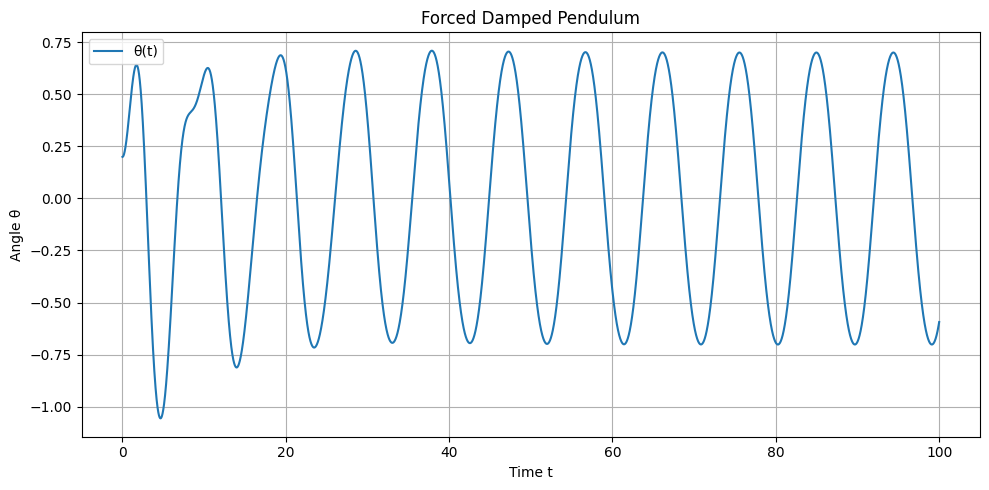
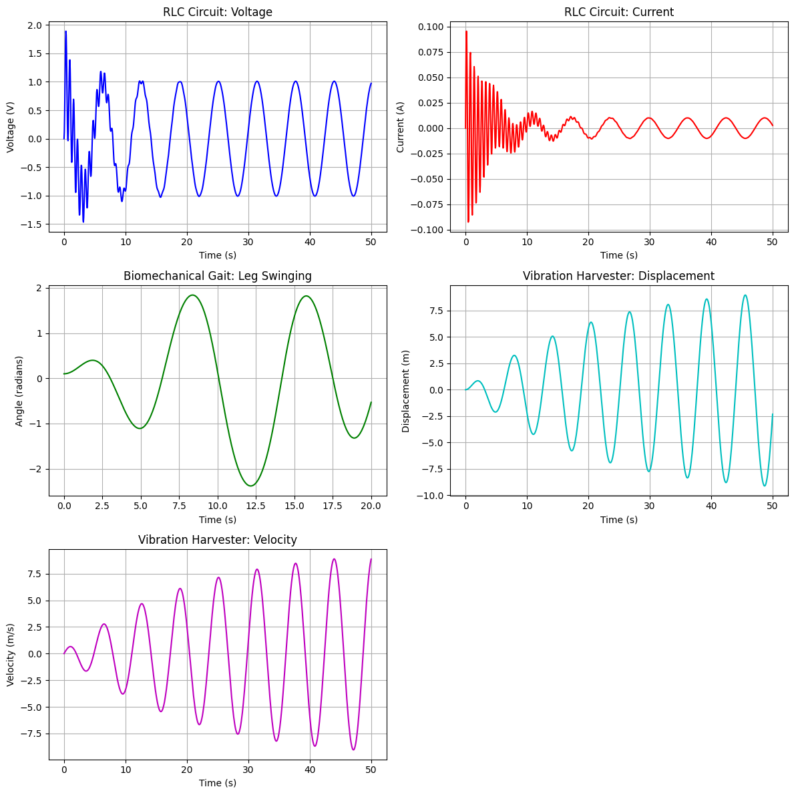
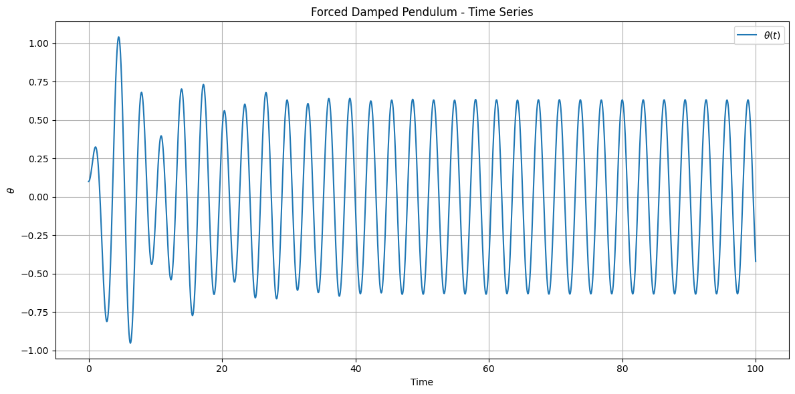

PROBLEM 2
📘 2. Theoretical Foundation
1.1 Governing Equation of a Forced Damped Pendulum
The motion of a forced damped pendulum is governed by the following second-order nonlinear differential equation:
Where:
- \(\theta(t)\): Angular displacement as a function of time
- \(\gamma\): Damping coefficient (frictional resistance)
- \(\omega_0\): Natural angular frequency of the pendulum
- \(A\): Amplitude of the external driving force
- \(\omega\): Frequency of the external driving force
- \(t\): Time
1.2 Small-Angle Approximation
For small oscillations where \(|\theta| \ll 1\), the approximation \(\sin(\theta) \approx \theta\) can be used. The governing equation becomes linear:
This is a linear second-order non-homogeneous differential equation.
The general solution:
Homogeneous solution:
Where \(\omega_d = \sqrt{\omega_0^2 - \frac{\gamma^2}{4}}\) is the damped natural frequency.
Particular solution:
Where:
- \(\Theta(\omega) = \frac{A}{\sqrt{(\omega_0^2 - \omega^2)^2 + \gamma^2 \omega^2}}\)
- \(\delta = \tan^{-1} \left( \frac{\gamma \omega}{\omega_0^2 - \omega^2} \right)\)
1.3 Resonance Condition
Resonance occurs when amplitude is maximized:
In the undamped case (\(\gamma = 0\)):
Maximum amplitude:
1.4 Energy Exchange
Total mechanical energy:
Where:
- \(m\): Mass of pendulum
- \(l\): Length of pendulum
- \(g\): Gravity
With no forcing, damping reduces energy over time. With forcing, energy input may: - Stabilize into steady-state - Lead to resonance - Induce chaos 
📊 2. Analysis of Dynamics
2.1 Parameter Variation and Influence
To explore the dynamics of the forced damped pendulum, we systematically vary the key system parameters:
- Damping coefficient: \(\gamma\)
- Driving amplitude: \(A\)
- Driving frequency: \(\omega\)
The governing nonlinear differential equation is:
By adjusting \(\gamma\), \(A\), and \(\omega\), we explore how the pendulum's motion transitions between different dynamic regimes.
2.2 Classification of Dynamical Regimes
The system exhibits several qualitatively different behaviors depending on the parameters:
🔁 1. Damped Periodic Motion
When the external force is absent or weak, and damping dominates, the system undergoes exponentially decaying motion toward rest:
Where \(\omega_d = \sqrt{\omega_0^2 - \frac{\gamma^2}{4}}\).
🎯 2. Resonance
When the driving frequency is close to the damped natural frequency:
The amplitude of the oscillation is maximized:
Resonance leads to large, steady oscillations — provided the system remains stable.
🔄 3. Quasiperiodic Motion
If the ratio between the natural frequency and driving frequency is irrational (incommensurate), the system exhibits quasiperiodic behavior:
- Motion does not repeat exactly.
- The trajectory densely fills a torus in phase space.
This regime is often a precursor to chaotic behavior as parameters are varied.
🌀 4. Chaotic Behavior
For sufficiently strong forcing and weak damping, the system becomes chaotic:
- Aperiodic long-term behavior
- Sensitive dependence on initial conditions
- No stable limit cycles
Chaotic motion appears irregular yet is deterministic and governed by the system’s nonlinear dynamics.
2.3 Transition to Chaos
The transition from order to chaos in the forced damped pendulum can be described through several mechanisms:
📈 1. Sensitivity to Initial Conditions
Small differences in initial angles or velocities grow exponentially over time:
Where \(\lambda\) is the Lyapunov exponent. For chaos, \(\lambda > 0\).
🔁 2. Period Doubling (Feigenbaum Cascade)
As \(A\) or \(\omega\) is increased, the system undergoes a sequence of period-doubling bifurcations:
- Period-1 \(\rightarrow\) Period-2 \(\rightarrow\) Period-4 \(\rightarrow\) Period-8 \(\rightarrow\) ... Chaos
This route to chaos is governed by universal constants, such as the Feigenbaum constant:
🌪️ 3. Strange Attractors
In the chaotic regime, trajectories are confined to fractal-like attractors in phase space:
- Non-integer (fractal) dimension
- Sensitive dependence and complex structure
- Invariant under time evolution
These are known as strange attractors, and they provide a geometric fingerprint of chaos.
2.4 Physical Interpretations of Dynamical Regimes
| Regime | Physical Interpretation |
|---|---|
| Damped Periodic | Energy is dissipated faster than it is supplied; system dies out |
| Resonance | Maximal energy transfer; potential for mechanical failure |
| Quasiperiodic | System reacts in complex but predictable manner; beats or modulations |
| Chaotic | Deterministic unpredictability; sensitive control required |
These regimes are critical in engineering and physical systems:
- Energy harvesting benefits from resonance.
- Control systems must avoid chaos.
- Bridge/tower design must mitigate resonance and damping-induced failures.
💡 Note: These dynamic regimes can be visualized using phase portraits, Poincaré sections, and bifurcation diagrams for a more in-depth understanding.
🛠 3. Practical Applications
3.1 Real-World Systems Modeled by the Forced Damped Pendulum
The forced damped pendulum is not only a theoretical construct but also a powerful analog for many real-world systems. These systems share a common structure: restoring forces, energy dissipation, and external periodic driving. Below are prominent examples:
⚡ 1. Energy Harvesting Systems
Devices that convert mechanical vibrations into usable electrical energy (e.g., piezoelectric harvesters) can be modeled by a forced damped pendulum:
- Oscillatory source: bridge vibrations, walking motion, or fluid flow
- Damping: energy loss to heat and electrical conversion
- Forcing: periodic vibrations from the environment
The harvested power \(P\) is related to the amplitude of oscillation \(\theta(t)\):
Maximal efficiency occurs when the system operates near resonance:
🌉 2. Suspension Bridges
Suspension bridges are vulnerable to oscillatory instabilities:
- Wind-induced periodic forcing (e.g., vortex shedding)
- Damping from air resistance and internal material friction
- Resonance can cause destructive oscillations, as seen in the Tacoma Narrows Bridge collapse
The angular displacement of a cross-section or cable can be modeled using:
Proper damping design ensures that large amplitudes are suppressed, avoiding catastrophic resonance.
🔋 3. Oscillating Electric Circuits (RLC Circuits)
An RLC circuit with resistance \(R\), inductance \(L\), and capacitance \(C\) follows:
By analogy:
- Charge \(q(t)\) is analogous to \(\theta(t)\)
- Resistance \(R\) is damping \(\gamma\)
- Driving voltage \(V_0\) is forcing amplitude \(A\)
The circuit undergoes resonance when:
This mapping allows mechanical intuition (from pendulums) to guide electronic design.
🦿 4. Biomechanics – Leg Swinging in Human Gait
Human leg motion during walking can be modeled as a damped driven pendulum:
- Driving force: muscle actuation and hip torque
- Damping: soft tissue resistance and joint friction
- Restoring force: gravity pulling the leg back down
The gait cycle involves entrainment (frequency locking) between muscle impulses and the natural leg-swing frequency \(\omega_0\).
Efficient locomotion arises when:
Overdriving or underdriving leads to increased metabolic cost and instability.
3.2 Engineering Implications
Understanding the forced damped pendulum informs engineering strategies across domains:
✅ 1. Stability Analysis
Avoiding dynamic instability requires evaluating the system’s response to perturbations:
- Ensure all eigenvalues of the linearized system have negative real parts
- Analyze phase space to identify limit cycles or chaotic attractors
🧩 2. Resonance Avoidance
Designs must avoid operating near resonant frequencies unless resonance is beneficial:
- Structures (e.g., bridges, buildings): avoid resonance to prevent failure
- Energy harvesters: tune to environmental frequency for maximum power
Tuning is achieved by adjusting \(\omega_0\) or damping \(\gamma\).
💡 3. Energy Efficiency
Systems driven at their natural frequencies with optimal damping maximize energy efficiency:
- In gait: reduce energy wasted in uncoordinated movement
- In circuits: minimize resistive losses
- In harvesters: maximize power output
Efficiency often peaks at moderate damping where the tradeoff between amplitude and stability is optimized.

⚙️ Conclusion: The forced damped pendulum is a fundamental model in physics and engineering. From biological locomotion to electronic filters, mastering its dynamics leads to improved safety, efficiency, and performance in real-world applications.
💻 4. Implementation (Computational Model)
To explore the dynamics of the forced damped pendulum, we numerically solve the governing differential equation and visualize its rich behavior under various parameter regimes.
4.1 Numerical Solution of the Differential Equation
The nonlinear second-order ordinary differential equation is:
We reformulate it as a system of first-order ODEs by letting:
- \(\theta_1 = \theta\)
- \(\theta_2 = \frac{d\theta}{dt}\)
Then the system becomes:
This system is solved numerically using:
- Fourth-order Runge-Kutta method (RK4) for fixed step size
scipy.integrate.solve_ivpwith adaptive step size
4.2 Parameter Sweeps and Simulations
To uncover various dynamical regimes, we simulate the pendulum under a range of parameters:
- Damping coefficient: \(\gamma \in [0, 1]\)
- Driving amplitude: \(A \in [0, 2]\)
- Driving frequency: \(\omega \in [0.5, 2.5]\)
- Initial conditions: \(\theta(0) = \theta_0\), \(\dot{\theta}(0) = \theta_2(0)\)
For each set, we integrate over a long time to observe steady-state behavior and transients.
4.3 Visualization Techniques
To extract meaningful insights, we employ the following visualization tools:
📉 1. Time Series Plots
Plotting \(\theta(t)\) or \(\dot{\theta}(t)\) vs. time reveals periodic, quasiperiodic, or chaotic temporal patterns.
🌀 2. Phase Space Diagrams
Plotting \(\dot{\theta}\) vs. \(\theta\) captures the system’s geometry in state space.
Patterns such as limit cycles, tori, or strange attractors emerge clearly.
🎯 3. Poincaré Sections
Sample the phase space at discrete intervals synchronized with the driving force:
This stroboscopic view reveals:
- Periodic motion → discrete points
- Quasiperiodic motion → closed curves
- Chaotic motion → scattered or fractal-like points
🔀 4. Bifurcation Diagrams
Fix all parameters except one (e.g., \(A\)), and plot steady-state values of \(\theta(t)\) sampled via Poincaré section:
These diagrams show:
- Period doubling
- Windows of chaos
- Critical thresholds of instability
4.4 Optional: Interactive Parameter Exploration
Using libraries like:
ipywidgetsPlotlybokeh
We can build interactive sliders for parameters like \(\gamma\), \(A\), and \(\omega\) to dynamically observe how system behavior evolves in real time.
# Example (Jupyter):
import ipywidgets as widgets
from IPython.display import display
gamma_slider = widgets.FloatSlider(value=0.2, min=0.0, max=1.0, step=0.01, description='Damping γ')
A_slider = widgets.FloatSlider(value=1.2, min=0.0, max=2.0, step=0.05, description='Amplitude A')
omega_slider = widgets.FloatSlider(value=1.5, min=0.5, max=2.5, step=0.05, description='Frequency ω')
display(gamma_slider, A_slider, omega_slider)
# 📦 5. Deliverables
This section describes the expected outputs of the investigation into the forced damped pendulum, integrating theoretical, computational, and interpretive components.
---
## 5.1 Markdown or Jupyter Notebook Document
The final submission will include a structured document (in `.md` or `.ipynb` format) containing:
### 📌 Code Implementations
- Numerical solution of the second-order ODE:
$$
\frac{d^2\theta}{dt^2} + \gamma \frac{d\theta}{dt} + \omega_0^2 \sin(\theta) = A \cos(\omega t)
$$
- Reformulation into first-order system:
$$
\begin{cases}
\frac{d\theta_1}{dt} = \theta_2 \\
\frac{d\theta_2}{dt} = -\gamma \theta_2 - \omega_0^2 \sin(\theta_1) + A \cos(\omega t)
\end{cases}
$$
- Implementation via Runge-Kutta or `solve_ivp`
---
### 📊 Plots and Diagrams
- **Time series** of $\theta(t)$ and $\dot{\theta}(t)$
- **Phase portraits** in $(\theta, \dot{\theta})$ space
- **Poincaré sections**: $\theta(t_n), \dot{\theta}(t_n)$ with $t_n = nT$
- **Bifurcation diagrams** as parameters (e.g., $A$) vary
---
### 📚 Explanations and Analysis
- Step-by-step derivations
- Interpretations of the dynamical behavior
- Visual descriptions of transitions from order to chaos
---
## 5.2 Written Explanation
The document will include:
### ✍️ Theoretical Derivations
- Linearized case using $\sin(\theta) \approx \theta$ for small $\theta$
- Analytical resonance condition: $\omega = \omega_0$ (for low damping)
- Energy exchange mechanisms
### 🔬 Observed Behaviors
- Damped oscillations and equilibrium
- Resonance and amplitude growth
- Quasiperiodic and chaotic regimes
### 🌍 Real-World Applications
- Bridge and building oscillations
- Energy harvesting through mechanical resonance
- Leg dynamics in locomotion (biomechanics)
- RLC circuits and analogies to electrical engineering
---
## 5.3 Model Limitations
The basic model of a forced damped pendulum assumes:
### ⚠️ Small-Angle Approximation
- $\sin(\theta) \approx \theta$ is valid only for $\theta \ll 1$
- Neglects nonlinear effects at large angles
### 🧮 Neglect of Nonlinear Damping
- Real systems often exhibit velocity-dependent (quadratic) or dry friction damping, e.g.:
$$
F_{\text{damping}} = -\gamma \dot{\theta} - \beta \dot{\theta}^2
$$
### ⏳ Periodic Forcing Assumption
- Real-world forces may be stochastic or aperiodic, leading to different dynamics
---
## 5.4 Proposed Extensions / Future Work
To enhance realism and complexity, we can investigate:
### 🔁 Nonlinear Damping
- Extend the model to include higher-order damping terms
- Investigate the impact on phase portraits and stability
### 🎲 Stochastic Driving Forces
- Replace $A \cos(\omega t)$ with a noisy or random driving signal
- Explore statistical properties and stochastic resonance
### 🔗 Coupled Pendulums
- Study systems of coupled pendulums:
$$
\begin{aligned}
\frac{d^2\theta_1}{dt^2} + \gamma \frac{d\theta_1}{dt} + \omega_0^2 \sin(\theta_1) &= \kappa (\theta_2 - \theta_1) + A \cos(\omega t) \\
\frac{d^2\theta_2}{dt^2} + \gamma \frac{d\theta_2}{dt} + \omega_0^2 \sin(\theta_2) &= \kappa (\theta_1 - \theta_2)
\end{aligned}
$$
- Observe synchronization, energy transfer, and emergent behaviors
---
> 📘 **Summary:** These deliverables provide a comprehensive exploration of the forced damped pendulum from theory to simulation, enabling insights into complex dynamical systems applicable in both science and engineering domains.
